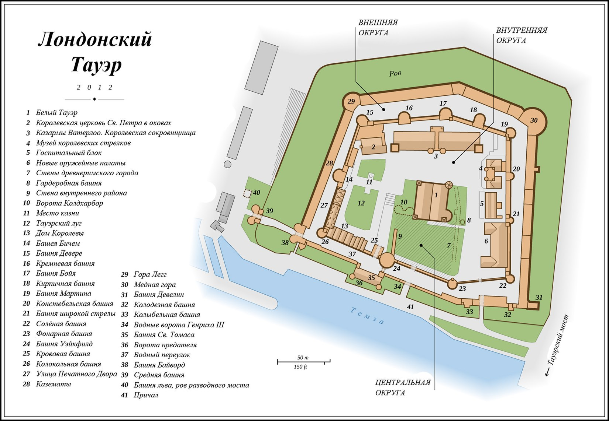

|
| Як писав герцог Единбурзький в своїй книзі, присвяченій 900-річчю Тауера, «за свою історію Лондонський Тауер був фортецею, палацом, сховищем королівських коштовностей, арсеналом, місцем, що приваблює туристів». |
 |
План Тауера:

|
Підстава фортеці Тауер приписується Вільгельму I. Після нормандського завоювання Англії Вільгельм I почав зводити оборонні замки для залякування підкорених англосаксів. Одним з найбільших в 1078 році став Тауер. Дерев'яний форт замінили величезної кам'яною будівлею - Великим Тауером, що представляє собою чотирикутне спорудження розмірами 32 х 36 метрів, висотою близько 30 метрів. Коли пізніше новий король Англії наказав побілити будівлю, воно отримало назву Білий Тауер (White Tower), або Біла вежа. Згодом, за часів короля Річарда Левове серце, були зведені ще кілька веж різної висоти і два ряди потужних кріпосних стін. Навколо фортеці був виритий глибокий рів, який робить її однією з найбільш неприступних фортець в Європі.
|
| Тауер - фортеця, що стоїть на північному березі Темзи, історичний центр Лондона, одне з найстаріших споруд Англії і один з головних символів Великобританії, який займає особливе місце в історії англійської нації. |
|